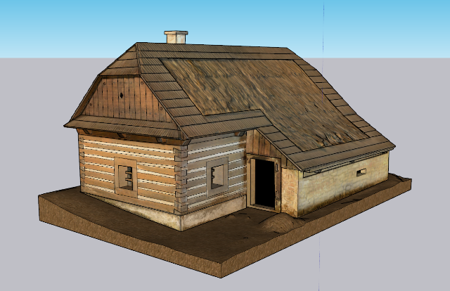
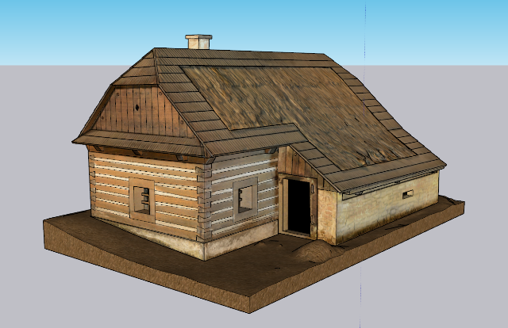
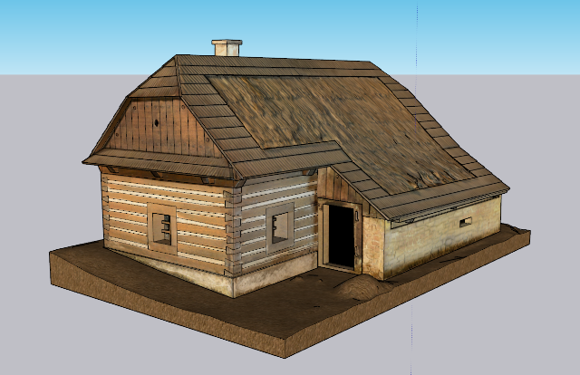
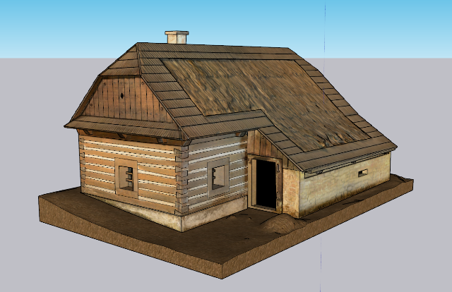

Webová stránka vznikla v rámci diplomové práce "Virtuální skansen - prezentace modelů modelů venkonvských stavení".
Cílem práce bylo vyzkoušet různé způsoby prezentace modelů na webových stránkách a v prostřetí virtuální reality.

© 2021 Eva Frommeltová